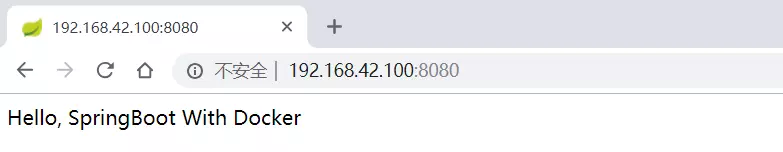

1、查看 firewall 服务状态
1 | systemctl status firewalld |
2、查看 firewall 的状态
1 | firewall-cmd --state |
3、开启、重启、关闭、firewalld.service 服务
1 | # 开启 |
4、查看防火墙规则
1 | firewall-cmd --list-all |
5、查询、开放、关闭端口
1 | # 查询端口是否开放 |
1、查看 firewall 服务状态
1 | systemctl status firewalld |
2、查看 firewall 的状态
1 | firewall-cmd --state |
3、开启、重启、关闭、firewalld.service 服务
1 | # 开启 |
4、查看防火墙规则
1 | firewall-cmd --list-all |
5、查询、开放、关闭端口
1 | # 查询端口是否开放 |
https://cr.console.aliyun.com/cn-hangzhou/instances/repositories
1 | docker login --username=geshaofei@126.com registry.cn-hangzhou.aliyuncs.com |
用于登录的用户名为阿里云账号全名，密码为开通服务时设置的密码。
您可以在访问凭证页面修改凭证密码。
1 | docker pull registry.cn-hangzhou.aliyuncs.com/gufei/owl:[镜像版本号] |
1 | docker login --username=geshaofei@126.com registry.cn-hangzhou.aliyuncs.com |
请根据实际镜像信息替换示例中的[ImageId]和[镜像版本号]参数。
从 ECS 推送镜像时，可以选择使用镜像仓库内网地址。推送速度将得到提升并且将不会损耗您的公网流量。
如果您使用的机器位于 VPC 网络，请使用 registry-vpc.cn-hangzhou.aliyuncs.com 作为 Registry 的域名登录，并作为镜像命名空间前缀。
使用”docker tag”命令重命名镜像，并将它通过专有网络地址推送至 Registry。
1 | # 查看镜像 |
使用”docker images”命令找到镜像，将该镜像名称中的域名部分变更为 Registry 专有网络地址。
1 | docker push registry-vpc.cn-hangzhou.aliyuncs.com/acs/agent:0.7-dfb6816 |
163yum 源：
1）备份当前 yum 源防止出现意外还可以还原回来
1 | cd /etc/yum.repos.d/ |
2）使用 wget 下载 163yum 源 repo 文件
1 | wget http://mirrors.163.com/.help/CentOS7-Base-163.repo |
3) 清理旧包
1 | yum clean all |
4）把下载下来 163repo 文件设置成为默认源
1 | mv CentOS7-Base-163.repo CentOS-Base.repo |
5）生成 163yum 源缓存并更新 yum 源
1 | yum makecache |
阿里云 yum 源：
1）备份当前 yum 源防止出现意外还可以还原回来
1 | cd /etc/yum.repos.d/ |
2）使用 wget 下载阿里 yum 源 repo 文件
1 | wget http://mirrors.aliyun.com/repo/Centos-7.repo |
3) 清理旧包
1 | yum clean all |
4）把下载下来阿里云 repo 文件设置成为默认源
1 | mv Centos-7.repo CentOS-Base.repo |
5）生成阿里云 yum 源缓存并更新 yum 源
1 | yum makecache |
1 | ghost: |
1 | services: |
第一种情况路径直接挂载到本地，比较直观，但需要管理本地的路径
第二种使用卷标的方式，比较简洁，但你不知道数据存在本地什么位置，下面说明如何查看docker的卷标
1 | docker volume ls |
1 | docker volume ls | grep mysql |
1 | docker volume inspect vagrant_mysql |
https://cr.console.aliyun.com/cn-hangzhou/instances/repositories
1 | # 执行命令的三种方式 |
区别：
优雅停机（Gracefully Shutdown），就是当应用（进程）要被关闭时，首先会被发送一个软终止信号。应用在收到这个信号后，执行清理工作，然后自行退出。如果在指定的时间内没有自行退出，则会被强制关闭——这自然就不优雅了。这个软终止信号一般就是指 SIGTERM。NodeJS 进程默认会对 SIGTERM 信号进行响应，执行进程退出。但是默认的监听程序并不会执行清理工作。我们需要显式监听该信号，并在清理完毕后执行 process.exit(0) 以退出进程。
然而，在 Docker 容器里实现优雅停机会有一些新的问题需要面对。当使用 docker stop 停止一个容器时，docker 会首先发送一个 SIGTERM 信号给容器内的 PID=1 进程，也就是常说的 init 进程。如果 PID=1 进程没有在规定时间（一般 10 秒）内退出，则 docker 会发送 SIGKILL 信号强制退出容器内的所有进程。PID=1 进程比较特殊，在 linux 下，它会忽略所有默认的信号监听程序，也就是说收到 SIGTERM 默认不会退出。所以，我们的 PID=1 进程要求能显式监听 SIGTERM 并执行后续动作。
然而，当我们使用 shell form 的 ENTRYPOINT 或 CMD 指令时——如 CMD npm run start，Docker 容器会默认启用一个 Shell 来运行后面的指令。此时 PID=1 进程是 /bin/sh，完整的运行命令是 /bin/sh -c ‘npm run start’。当 sh 收到 SIGTERM 信号时，它自身并不会退出。因为 sh 并没有显式监听 SIGTERM，默认的信号处理器被忽略了。自然 sh 内部也不会把信号转发给子进程。最后只会超时，继而被 SIGKILL 强制关闭。
Docker 推荐我们用 exec form 的 ENTRYPOINT 或 CMD 指令，如 CMD [“npm”, “run”, “start”]。这样 PID=1 进程就是 npm 了，不再有 sh 进程了。

创建 springboot 项目
1 | package com.eangulee.demo.controller; |
1 | # Docker image for springboot file run |
解释下这个配置文件：
VOLUME 指定了临时文件目录为/tmp。其效果是在主机 /var/lib/docker 目录下创建了一个临时文件，并链接到容器的/tmp。改步骤是可选的，如果涉及到文件系统的应用就很有必要了。/tmp 目录用来持久化到 Docker 数据文件夹，因为 Spring Boot 使用的内嵌 Tomcat 容器默认使用/tmp 作为工作目录项目的 jar 文件作为 app.jar 添加到容器的 ENTRYPOINT 执行项目 app.jar。为了缩短 Tomcat 启动时间，添加一个系统属性指向 /dev/./urandom 作为 Entropy Source
如果是第一次打包，它会自动下载 java 8 的镜像作为基础镜像，以后再制作镜像的时候就不会再下载了。
java:8 是指 Docker Hub 上官方提供的 java 镜像，版本号是 8 也就是 jdk1.8，有了这个基础镜像后，Dockerfile 可以通过 FROM 指令直接获取它的状态——也就是在容器中 java 是已经安装的，接下来通过自定义的命令来运行 Spring Boot 应用：
VOLUME 指向了一个/tmp 的目录，由于 Spring Boot 使用内置的 Tomcat 容器，Tomcat 默认使用/tmp 作为工作目录。效果就是在主机的/var/lib/docker 目录下创建了一个临时文件，并连接到容器的/tmp。
将项目的 jar 文件作为 app.jar 添加到容器
RUN 表示在新创建的镜像中执行一些命令，然后把执行的结果提交到当前镜像。这里使用 touch 命令来改变文件的修改时间，Docker 创建的所有容器文件默认状态都是“未修改”。这对于简单应用来说不需要，不过对于一些静态内容（比如：index.html）的文件就需要一个“修改时间”。
EXPOSE 容器暴露端口
ENTRYPOINT 应用启动命令 参数设定
在服务器新建一个 docker 文件夹，将 maven 打包好的 jar 包和 Dockerfile 文件复制到服务器的 docker 文件夹下
docker 文件夹
执行下面命令， 看好，最后面有个”.”点！
1 | docker build -t springbootdemo4docker . |
-t 参数是指定此镜像的 tag 名
制作完成后通过docker images命令查看我们制作的镜像
1 | docker run -d -p 8080:8085 springbootdemo4docker |
直接浏览器访问： http://localhost:8080/

好了，下一步就是学习 springboot+mysql+redis 如何在 docker 上如何部署了。
编程免不了要写配置文件，怎么写配置也是一门学问。
YAML 是专门用来写配置文件的语言，非常简洁和强大，远比 JSON 格式方便。
本文介绍 YAML 的语法，以 JS-YAML 的实现为例。你可以去在线 Demo 验证下面的例子。

YAML 语言（发音 /ˈjæməl/ ）的设计目标，就是方便人类读写。它实质上是一种通用的数据串行化格式。
它的基本语法规则如下。
# 表示注释，从这个字符一直到行尾，都会被解析器忽略。
YAML 支持的数据结构有三种。
以下分别介绍这三种数据结构。
对象的一组键值对，使用冒号结构表示。
1 | animal: pets |
转为 JavaScript 如下。
1 | { animal: 'pets' } |
Yaml 也允许另一种写法，将所有键值对写成一个行内对象。
1 | hash: { name: Steve, foo: bar } |
转为 JavaScript 如下。
1 | { hash: { name: 'Steve', foo: 'bar' } } |
一组连词线开头的行，构成一个数组。
1 | - Cat |
转为 JavaScript 如下。
1 | ['Cat', 'Dog', 'Goldfish'] |
数据结构的子成员是一个数组，则可以在该项下面缩进一个空格。
1 | - - Cat |
转为 JavaScript 如下。
1 | [['Cat', 'Dog', 'Goldfish']] |
数组也可以采用行内表示法。
1 | animal: [Cat, Dog] |
转为 JavaScript 如下。
1 | { animal: ['Cat', 'Dog'] } |
对象和数组可以结合使用，形成复合结构。
1 | languages: |
转为 JavaScript 如下。
1 | { |
纯量是最基本的、不可再分的值。以下数据类型都属于 JavaScript 的纯量。
数值直接以字面量的形式表示。
1 | number: 12.30 |
转为 JavaScript 如下。
1 | { number: 12.30 } |
布尔值用true和false表示。
1 | isSet: true |
转为 JavaScript 如下。
1 | { isSet: true } |
null用~表示。
1 | parent: ~ |
转为 JavaScript 如下。
1 | { parent: null } |
时间采用 ISO8601 格式。
1 | iso8601: 2001-12-14t21:59:43.10-05:00 |
转为 JavaScript 如下。
1 | { iso8601: new Date('2001-12-14t21:59:43.10-05:00') } |
日期采用复合 iso8601 格式的年、月、日表示。
1 | date: 1976-07-31 |
转为 JavaScript 如下。
1 | { date: new Date('1976-07-31') } |
YAML 允许使用两个感叹号，强制转换数据类型。
1 | e: !!str 123 |
转为 JavaScript 如下。
1 | { e: '123', f: 'true' } |
字符串是最常见，也是最复杂的一种数据类型。
字符串默认不使用引号表示。
1 | str: 这是一行字符串 |
转为 JavaScript 如下。
1 | { str: '这是一行字符串' } |
如果字符串之中包含空格或特殊字符，需要放在引号之中。
1 | str: '内容： 字符串' |
转为 JavaScript 如下。
1 | { str: '内容: 字符串' } |
单引号和双引号都可以使用，双引号不会对特殊字符转义。
1 | s1: '内容\n字符串' |
转为 JavaScript 如下。
1 | { s1: '内容\\n字符串', s2: '内容\n字符串' } |
单引号之中如果还有单引号，必须连续使用两个单引号转义。
1 | str: "labor's day" |
转为 JavaScript 如下。
1 | { str: 'labor\'s day' } |
字符串可以写成多行，从第二行开始，必须有一个单空格缩进。换行符会被转为空格。
1 | str: 这是一段 |
转为 JavaScript 如下。
1 | { str: '这是一段 多行 字符串' } |
多行字符串可以使用|保留换行符，也可以使用``折叠换行。
1 | this: | |
转为 JavaScript 代码如下。
1 | { this: 'Foo\nBar\n', that: 'Foo Bar\n' } |
+表示保留文字块末尾的换行，-表示删除字符串末尾的换行。
1 | s1: | |
转为 JavaScript 代码如下。
1 | { s1: 'Foo\n', s2: 'Foo\n\n\n', s3: 'Foo' } |
字符串之中可以插入 HTML 标记。
1 | message: | |
转为 JavaScript 如下。
1 | { message: '\n<p style="color: red"\n 段落\n</p\n' } |
锚点&和别名*，可以用来引用。
1 | defaults: |
等同于下面的代码。
1 | defaults: |
&用来建立锚点（defaults），<<表示合并到当前数据，*用来引用锚点。
下面是另一个例子。
1 | - &showell Steve |
转为 JavaScript 代码如下。
1 | ['Steve', 'Clark', 'Brian', 'Oren', 'Steve'] |
这是 JS-YAML 库特有的功能，可以把函数和正则表达式转为字符串。
1 | # example.yml |
解析上面的 yml 文件的代码如下。
1 | var yaml = require('js-yaml') |
从 JavaScript 对象还原到 yaml 文件的代码如下。
1 | var yaml = require('js-yaml') |
yml 的表达能力非常强大，目前在配置文件中得到了广泛的应用。这里说一说其引用功能，这在 json 中都不太好实现，引用的出现可以进一步简化。
基本思路：先定义一个对象（拥有属性）或数组，并给它起一个名字。然后在文档中可以用“*对象名”进行引用。
1、对象引用的例子
定义对象：
1 | CENTER: |
（1）引用用方式 1：引用值
1 | huifeng: |
等同 JSON：
1 | huifeng: { bbb: { aaa: 'test is ok' } } |
（2）引用方式 2：插入
1 | huifeng: |
等同 JSON：
1 | huifeng: { bbb: { aaa: 'test is ok' } } |
2、数组的引用
定义一个数据引用：
1 | WWW: |
等同 json：
1 | WWW: ['Zhangsan', 'Lisi', 'Wangwu', 'Zhaoliu'] |
使用引用：
1 | huifeng: { eee: ['Zhangsan', 'Lisi', 'Wangwu', 'Zhaoliu'] } |
参考：
0、http://www.ruanyifeng.com/blog/2016/07/yaml.html
1、JS-YAML demo. YAML JavaScript parser. http://nodeca.github.io/js-yaml/
2、YAML Ain’t Markup Language (YAML™) Version 1.2 3rd Edition. http://yaml.org/spec/1.2/spec.html?spm=a2c4e.11153940.blogcont44691.5.2cce2063Cp9CEJ#id2777534
1 | docker search redis |
（这个示例中，官方镜像也是 stars 最多的）：
1 | docker pull redis |
1 | docker images |
1 | docker run -p 6379:6379 -d --name my_redis redis:latest redis-server |
ps：
1 | 菜鸟教程： |
1 | docker run -d --name my_redis -p 6379:6379 redis --requirepass "123456" |
1 | --restart具体参数值详细信息 |
还可以在使用 on-failure 策略时，指定 Docker 将尝试重新启动容器的最大次数；默认情况下，Docker 将尝试永远重新启动容器；
1 | docker run --restart=on-failure:10 redis |
1 | docker run -p 6379:6379 -d --name redis --restart=always redis --requirepass "123456" |
如果创建时未指定 –restart=always ,可通过 update 命令更改
1 | docker update --restart=always 容器ID |
1 | docker ps |
1 | docker exec -ti my_redis redis-cli |
1 | docker inspect my_redis | grep IPAddress |
使用 redis 镜像执行 redis-cli 命令连接到刚启动的容器,主机 IP 为 172.17.0.1
1 | docker exec -it my_redis redis-cli |
1 | docker exec -it my_redis redis-cli -h 192.168.1.100 -p 6379 -a your_password //如果有密码 使用 -a参数 |
redis 操作命令：
redis 官网：https://redis.io/commands
docker search rabbitmq1 | docker search rabbitmq |
docker pull rabbitmq (镜像未配有控制台)docker pull rabbitmq:management (镜像配有控制台)注意：rabbitmq是官方镜像，该镜像不带控制台。如果要安装带控制台的镜像，需要在拉取镜像时附带tag标签，例如：management。tag标签可以通过https://hub.docker.com/_/rabbitmq?tab=tags来查询。
1 | docker pull rabbitmq:management |
docker run --name rabbitmq -d -p 15672:15672 -p 5672:5672 rabbitmq:management1 | docker run --name rabbitmq -d -p 15672:15672 -p 5672:5672 rabbitmq:management |
参数说明
1 | -d 后台运行容器； |
docker stop rabbitmq1 | docker stop rabbitmq |
docker start rabbitmq1 | docker start rabbitmq |
docker restart rabbitmq1 | docker restart rabbitmq |
docker restart rabbitmq1 | docker top rabbitmq |
启动容器后，可以浏览器中访问http://localhost:15672来查看控制台信息。RabbitMQ默认的用户名：guest，密码：guest
如下图：
参考链接：
https://hub.docker.com/_/rabbitmq?tab=description
Docker 企业级应用实战